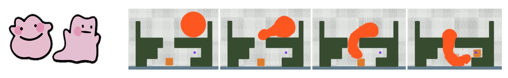

DittoGym: Learning to Control Soft Shape-Shifting Robots
ICLR 2024
Abstract
Robot co-design, where the morphology of a robot is optimized jointly with a learned policy to solve a specific task, is an emerging area of research. It holds particular promise for soft robots, which are amenable to novel manufacturing techniques that can realize learned morphologies and actuators. Inspired by nature and recent novel robot designs, we propose to go a step further and explore the design of reconfigurable robots, defined as robots that can change their morphology within their lifetime. We formalize control of reconfigurable soft robots as a high-dimensional reinforcement learning (RL) problem. We unify morphology change, locomotion, and environment interaction in the same action space, and introduce an appropriate, coarse-to-fine curriculum that enables us to discover policies that accomplish fine-grained control of the resulting robots. We also introduce DittoGym, a comprehensive RL benchmark for reconfigurable soft robots that require fine-grained morphology changes to accomplish the tasks. Finally, we evaluate our proposed coarse-to-fine algorithm on DittoGym and demonstrate robots that learn to change their morphology several times within a sequence, uniquely enabled by our RL algorithm.
Highlights

In this paper, we address challenges in controlling highly reconfigurable soft robots, who can change their morphology to accomplish desired tasks. The figure above illustrates a task where a circular robot needs to alter its body shape to fit within a confined chamber to manipulate the square cargo to the target point.


The robot can undergo intricate shape changes to form "M", "I" and "T" letters.
Formalization

(a) The soft reconfigurable robot, initialized with a specific shape, is ready to venture into the task. (b) Instead of directly controlling material points in the robot, the policy first applies actions to the action grid, which corresponds to the grid in the material point method~(MPM). (c) Each particle aggregates actuation signals from its adjacent grid points during the grid-to-particle distribution stage. (d) Under the principles of Cauchy stress and the von Mises yield criterion, we can actuate the particles in a physically plausible manner, thereby changing the robot's morphology and state.
Method

In stage one, we train a coarse policy to efficiently explore the action space and discover meaningful action patterns. Subsequently, in stage two, we employ a coarse-to-fine approach to train a high-resolution residual policy that delves deeper into optimizing the actions for improved performance.
DittoGym
We demonstrate the results from DittoGym. Notably, policies trained under the guidance of CFP exhibit precise control over highly reconfigurable robots, enabling them to successfully accomplish their respective tasks.
The videos may take a few minutes to load. Thank you for your patience!
MATCH
RUN
GROW
KICK
DIG
OBSTACLE
CATCH
SLOT
Demo Video
Citation
@misc{huang2024dittogym,
title={DittoGym: Learning to Control Soft Shape-Shifting Robots},
author={Suning Huang and Boyuan Chen and Huazhe Xu and Vincent Sitzmann},
year={2024},
eprint={2401.13231},
archivePrefix={arXiv},
primaryClass={cs.RO}
}